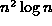

Data Structures and Algorithms
with Object-Oriented Design Patterns in Java
Data Structures and Algorithms
with Object-Oriented Design Patterns in Java
 show that show that show that . show that .
show that show that show that . show that .| f(n) | g(n) |
| 10n | |
|  | |
|
| |
|
| |
|
| |
| | |
| | |
|
| |
)
satisfy the identities
for  .
.
f (n, 10, 0); g (n, m, k); h (n, m, 1000000);
for (int i = 0; i < n; ++i)
f (n, m, k);for (int i = 0; i < e (n, 10, 100); ++i)
f (n, 10, 0);for (int i = 0; i < e (n, m, k); ++i)
f (n, 10, 0);for (int i = 0; i < n; ++i)
for (int j = i; j < n; ++j)
f (n, m, k);
class Example
{
static int f (int n)
{
int sum = 0;
for (int i = 1; i <= n; ++i)
sum = sum + i;
return sum;
}
// ...
}).
What value does g compute?
(Express your answer as a function of n).
Give a tight, big oh expression for the worst-case
running time of the method g.
class Example
{
// ...
static int g (int n)
{
int sum = 0;
for (int i = 1; i <= n; ++i)
sum = sum + i + f (i);
return sum;
}
}
and the method g is given in Exercise ).
What value does h compute?
(Express your answer as a function of n).
Give a tight, big oh expression for the worst-case
running time of the method h.
class Example
{
// ...
int h (int n)
{ return f (n) + g (n); }
}
 Copyright © 1998 by Bruno R. Preiss, P.Eng. All rights reserved.
Copyright © 1998 by Bruno R. Preiss, P.Eng. All rights reserved.